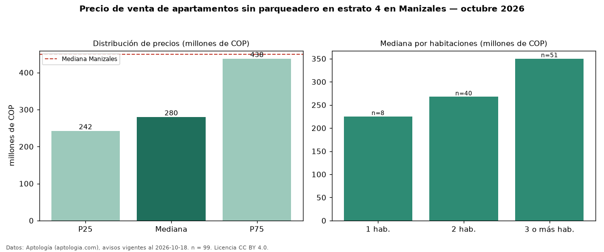

Precio de venta de apartamentos sin parqueadero en estrato 4 en Manizales — octubre 2026
COP 280 millones es el precio mediano de apartamentos sin parqueadero en estrato 4 en venta en Manizales (n = 99 avisos). Eso es 20 % menos que la mediana de los apartamentos en estrato 4 en venta de Manizales (COP 350 millones, n = 701); este segmento reúne el 14 % de esos avisos. Por metro cuadrado, la mediana es COP 5,05 millones/m² (n = 97), 8 % por debajo de los apartamentos en estrato 4 en venta de Manizales (COP 5,52 millones/m²). El área mediana anunciada es 66 m². El segmento con más oferta es el de 3 o más habitaciones (51 avisos, mediana COP 350 millones); pasar de 1 habitación a 3 o más habitaciones cambia la mediana +56 %. La administración mediana declarada es COP 204.000 al mes (n = 64). La mitad central de los avisos va de COP 242 millones a COP 438 millones (razón 1,8), una dispersión moderada. La mediana de todos los apartamentos en venta de Manizales es COP 450 millones (−38 % de diferencia). Datos: Aptología (aptologia.com), CC BY 4.0 — https://www.aptologia.com/venta/manizales. Archivos: PDF, CSV con las cifras y gráfica PNG.

| Avisos únicos | 99 |
|---|---|
| Percentil 25 | COP 242.500.000 |
| Mediana | COP 280.000.000 |
| Percentil 75 | COP 437.500.000 |
| Mediana por m² | COP 5.052.631 |
Fuente: avisos vigentes de portales inmobiliarios recopilados por Aptología, deduplicados (mínimo 30 avisos únicos por celda). Precios pedidos, no cerrados. Fecha: 2026-10-18.